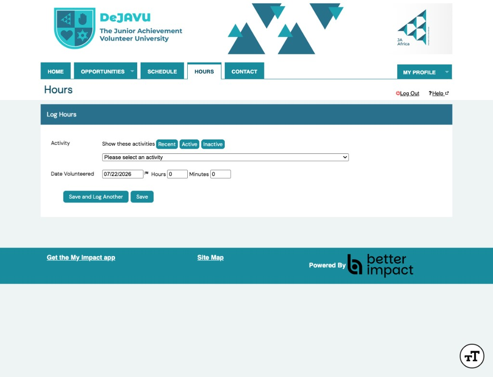
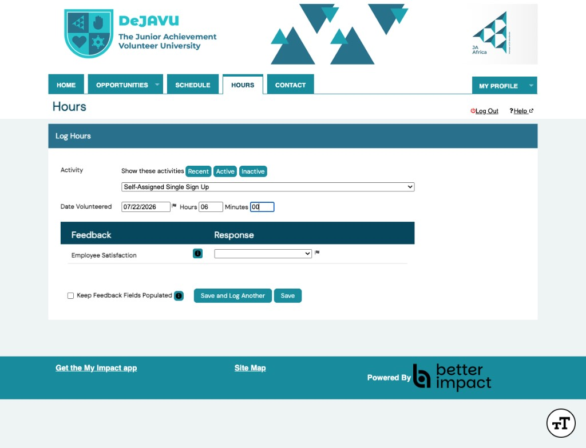
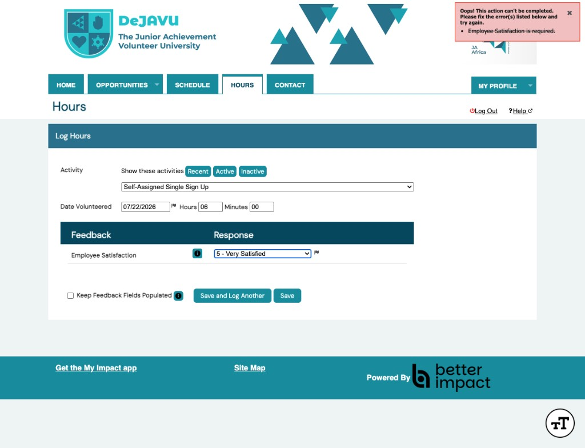
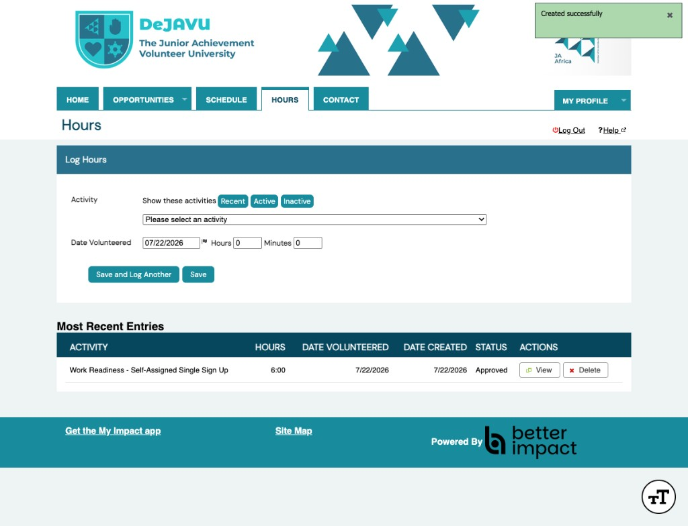

1
Open Hours Tab
Select your activity from the dropdown

DeJAVU has been configured to use auto-approval for hours. That removes administrative approval bottlenecks and allows us gather feedback for Monitoring & Evaluation (M&E).
These are four independent options for the same problem — not steps in a sequence. Pick one, or mix them across different opportunity types. Tap any card to read more.
Actual DeJAVU volunteer portal screens — logging hours and completing feedback on the final shift. Click any screenshot to view full size.
Select your activity from the dropdown

Enter date, hours & minutes and feedback which appears below

Rate satisfaction — this box only appears on the final shift

Created successfully — status Approved instantly

The same current live flow also works from a phone. Here's an actual screen recording of a volunteer logging hours in the DeJAVU mobile app.
Same hour-logging flow as the Live Portal walkthrough, built for a phone screen. Tap the video to play.
Same steps · same rules · same instant approval — on every device.
Not every opportunity behaves the same way, so feedback forms are customized as required.
If feedback fields must stay switched on for every log (Option 1 not possible),so we can make every question optional. See the actual screens in the Live Portal walkthrough above — this diagram shows why the setting matters.
No new tools required — just a repeating weekly task using a Better Impact saved search. Read the strip left to right; it loops back to Monday every week.
Same as Option 3, but nobody has to search or click send. This loop quietly repeats every night, for every volunteer, with no admin involved.